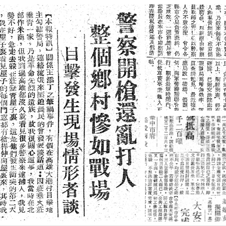
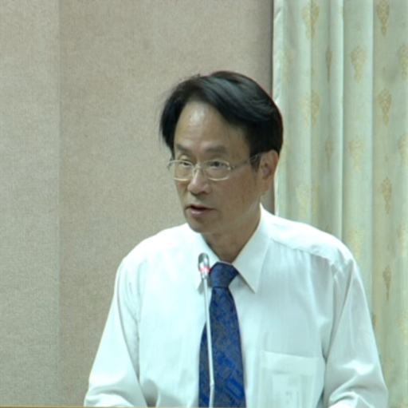
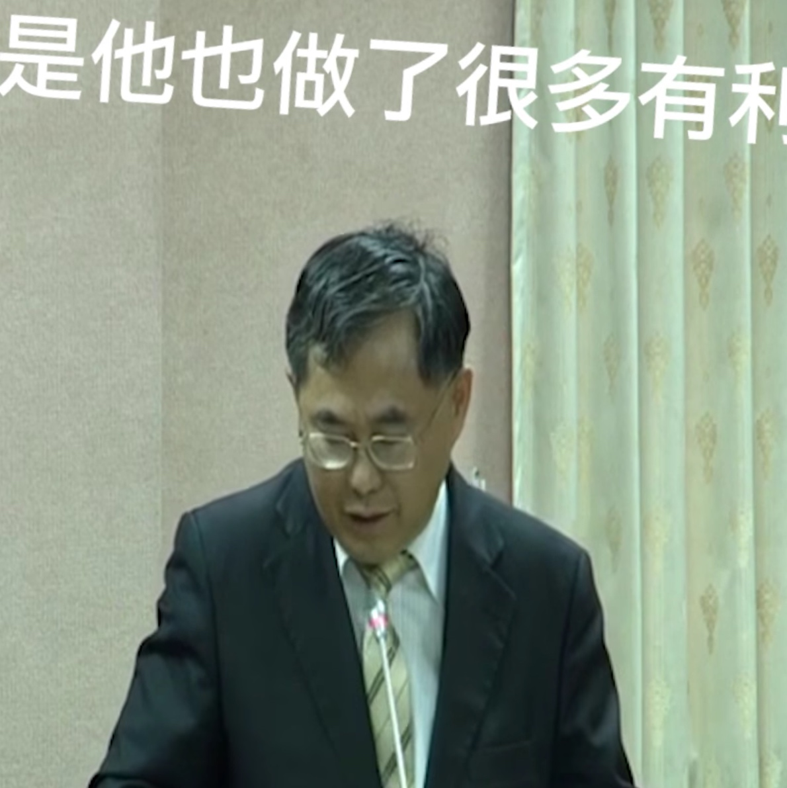
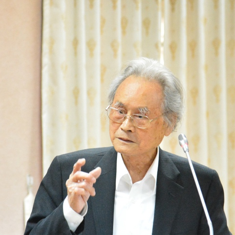
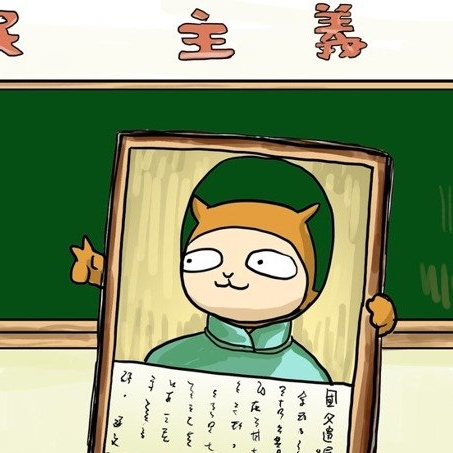
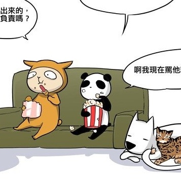

說好的轉型正義呢
 | 促轉條例修法回顧 |
 | 哲學人看轉型正義 |
 | 草民專屬驚喜包 |
|
|
| 促轉條例修法回顧 |
| 哲學人看轉型正義 |
| 草民專屬驚喜包 |
|
沃草團隊透過互動地圖，協助大家了解二二八事件是如何開始，並回顧至今仍未通過的《促轉條例》修法歷程。
|  |
【互動地圖】重返二二八起點 |
|  |
陳儀深：《促轉條例》是將外來體制轉向本土的實踐 |
|  |
中正紀念堂拆除將無處觀光？國民黨邀請學者發言挨批 |
|  |
國民黨邀請學者：轉型正義不如拚經濟 |
 |
|
這個月我們以「轉型正義」為主題，為你精選了這些文章：
|  |
國父遺像的不正當性——政治符號的道德問題 |
|  |
我們需要為祖先的罪惡負責嗎？集體責任的道德爭議 |
為什麼要進行轉型正義？
|
沃草的核心目標是：降低公民參與政治的門檻。一個成熟的公民社會，不能只靠少數人付出一切，投入社會運動。如果大家一起付出，只需要各自一小部分的時間心力，就能改變這個社會，更靠近那個你我嚮往的小國小民、好國好民。